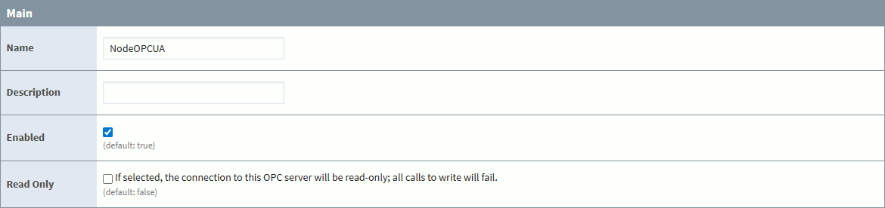
Ignition OPC Connection
Configure an OPC-UA client to collect IoT data from Pareto Anywhere.
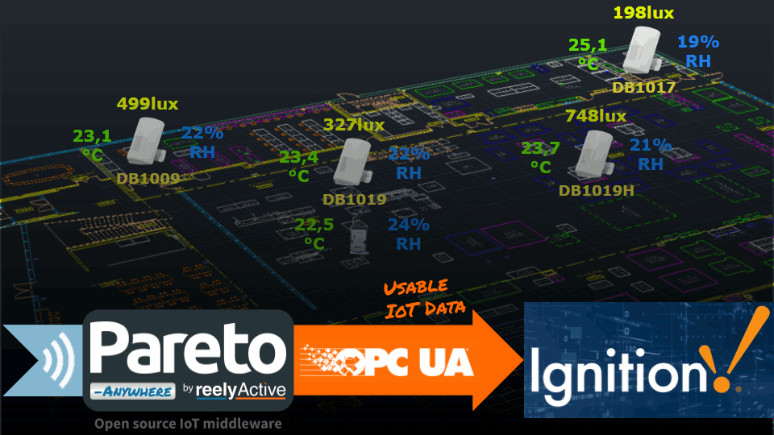
The TL;DR (Too Long; Didn't Read)
Learn how to configure an OPC Connection in Ignition to collect data from Pareto Anywhere.
- What's Pareto Anywhere?
- Pareto Anywhere is open source IoT middleware that makes the data from just about anything usable.
- What's Ignition?
- Ignition is web-based SCADA software by Inductive Automation.
- Why OPC-UA?
- Both Ignition and Pareto Anywhere support OPC-UA, which facilitates standards-based integration.
Prerequisites
Ignition and Pareto Anywhere (with barnacles-opcua) both installed.
-
Download Ignition
Install the full version for free.
-

-
Run Pareto Anywhere on a PC
Our step-by-step guide to install and run on a Windows/Mac/Linux PC (or server).*
* Add the /barnacles-opcua module to act as OPC-UA server.
Creating the OPC Connection Step 1 of 2
Connect Ignition as an OPC-UA client to Pareto Anywhere.
- Ignition is the client?
- Yes. Ignition is the OPC-UA client and Pareto Anywhere is the OPC-UA server.
- Both on localhost?
- It is possible—and convenient—to run both Ignition and Pareto Anywhere on the same machine. For a remote instance, it is strongly recommended to enable a secure connection.
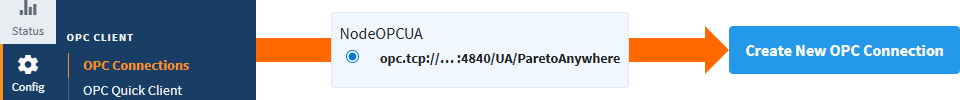
Access the Gateway Part 1
Browse to the Gateway, for example at localhost:8088, if Ignition is running on the local machine.
See Accessing the Gateway for details.
Create new OPC Connection Part 2
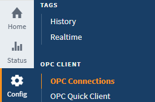
From the menu bar at left, select Config.
From the submenu, under OPC CLIENT, select OPC Connections.
From the OPC Connections page, click Create new OPC Connection...
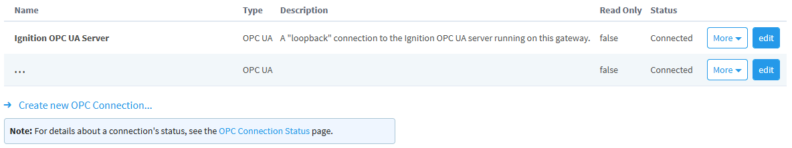
Select the OPC-UA option and, click Next.
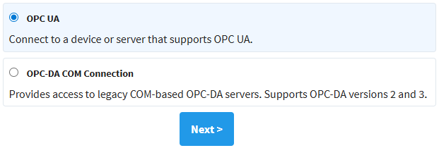
Enter the Endpoint URL of the Pareto Anywhere OPC-UA server. If Pareto Anywhere is running on the same machine, by default this will be opc.tcp://localhost:4840/UA/ParetoAnywhere. Else change localhost to the IP address of the remote machine. Then click Next.
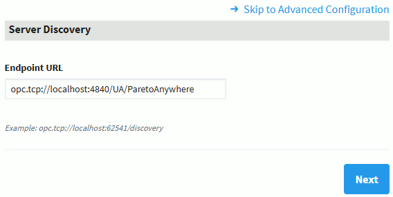
If the Endpoint URL is valid, the Pareto Anywhere OPC-UA server should appear. Click Next.
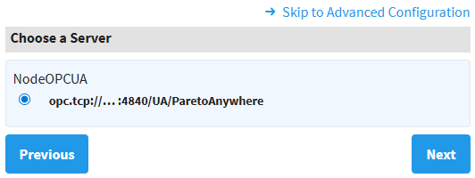
Choose the security policy/mode* or leave as the default of None. Click Next.
* If security is selected, consult the Security Certificate documentation of barnacles-opcua to create/add the necessary certificates.
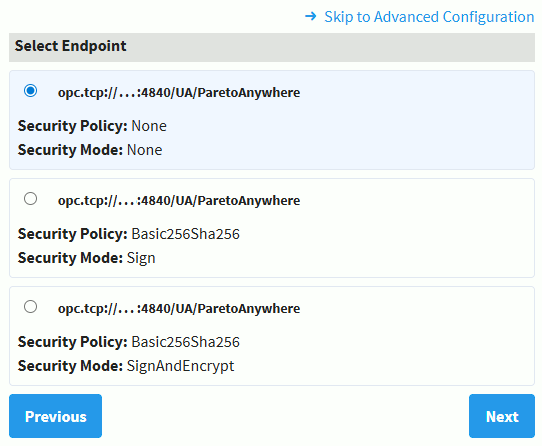
Confirm the connection settings and click Finish.
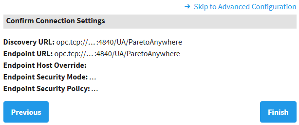
Complete OPC-UA Settings Part 3
A configuration page should appear, enabling fine-tuning of the OPC Connection parameters. Aside from perhaps the Name and Description, most parameters can be left as default.
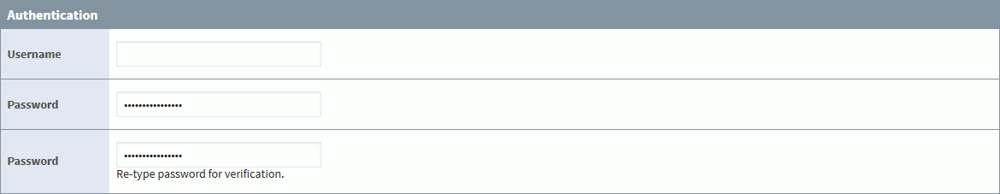
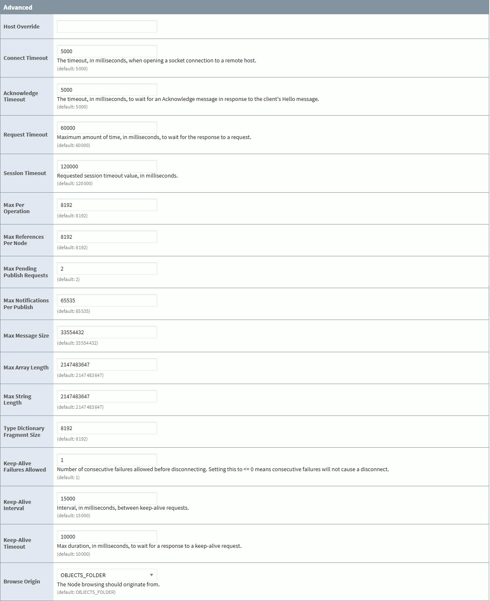
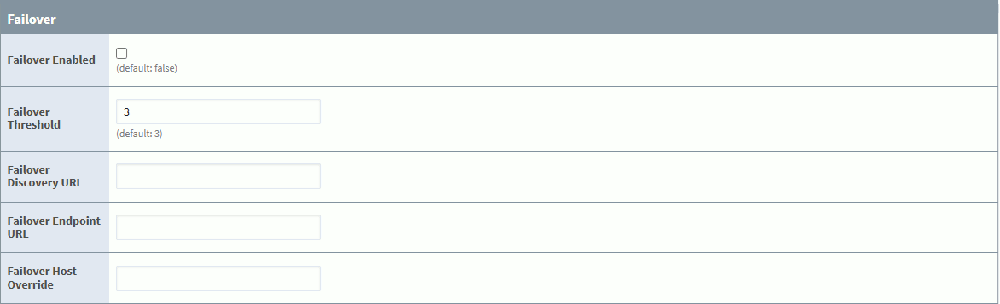
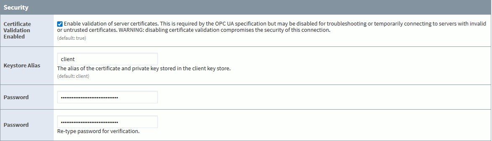
Click Create New OPC Connection at the bottom of the page. The Ignition OPC-UA client for Pareto Anywhere should now connect automatically, as will be validated in Step 2, below.
Observing data Step 2 of 2
Confirm using the OPC Quick Client that data is received from Pareto Anywhere.
- OPC Quick Client?
- Ignition includes OPC Quick Client as a built-in tool to facilitate testing and troubleshooting of OPC-UA connections.
- Can data be simulated?
- Yes. In the absence of live IoT data from Pareto Anywhere, the /barnacles-opcua module can be used standalone to provide simulated sensor data for testing.
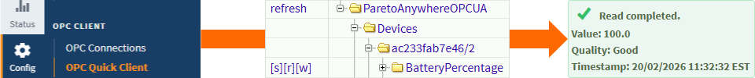
Confirm OPC connection Part 1
Following the creation of a new OPC Connection in Step 1, above, the list of OPC Connections should appear with an entry for the Pareto Anywhere OPC-UA client. Confirm that the status is Connected.
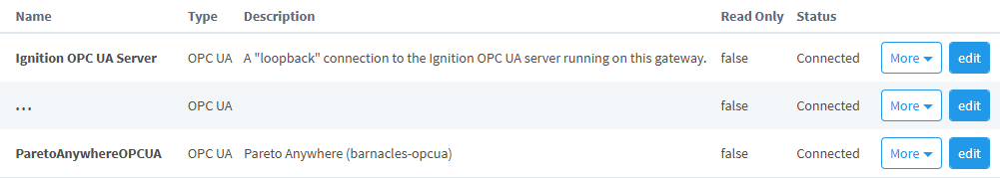
Observe OPC-UA data Part 2
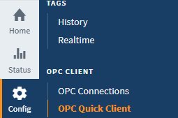
From the menu bar at left, select Config.
From the submenu, under OPC CLIENT, select OPC Quick Client.
The OPC Quick Client should appear, displaying the valid OPC Connections, including the Pareto Anywhere OPC-UA Server. Expand the Pareto Anywhere OPC-UA Server and expand its Devices folder to see the IoT devices named by their wireless identifier signatures.
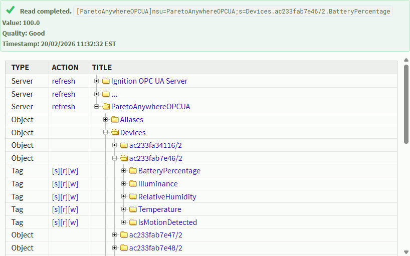
To observe sensor data, expand any Device folder and Property subfolder, such as BatteryPercentage in the screenshot above, and click on [r] in the ACTION column to read the device property.
The Value, Quality and Timestamp of the device property will appear above the table.
Enjoy the real-time data Part 3
Our cheatsheet details the standard properties of the dynamb JSON output from Pareto Anywhere.
-
Developers Cheatsheet
"Owl" you need to know about Pareto Anywhere's core data structures.


Tutorial prepared with ♥ by jeffyactive.
You can reelyActive's open source efforts directly by contributing code & docs, collectively by sharing across your network, and commercially through our packages. Merci à Jonathan Lapalme du CNIMI pour ses contributions qui ont permis la réalisation de ce tutoriel!Where to next?
Continue exploring our open architecture and all its applications.
-

-
Directory of Devices
Browse all device configuration tutorials and development guides.
-

-
reelyActive Developers
Browse all developer documentation and tutorials.
-

-
reelyActive
Together, let's make sense of things.